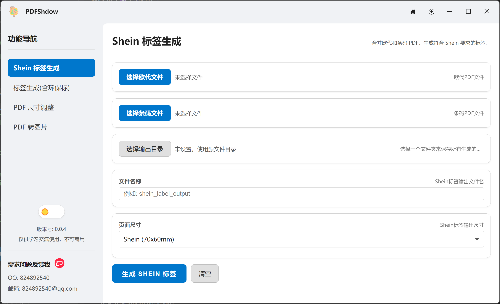

专业的PDF处理工具
PDFShdow为您提供强大而简洁的PDF处理解决方案。无论是调整页面尺寸、合并文档还是格式转换，都能轻松完成。
v0.0.6
最新版本 · 2025年1月
核心功能
界面预览
简洁直观的用户界面，让PDF处理变得简单高效
点击查看界面预览

立即获取 PDFShdow
支持 Windows 系统，完全免费，无广告干扰
系统要求
- Windows 10 或更高版本
- 4GB RAM (推荐 8GB)
- 500MB 可用存储空间
当前版本
- 版本号：v0.0.6
- 更新日期：2025年1月
- 文件大小：约 80MB